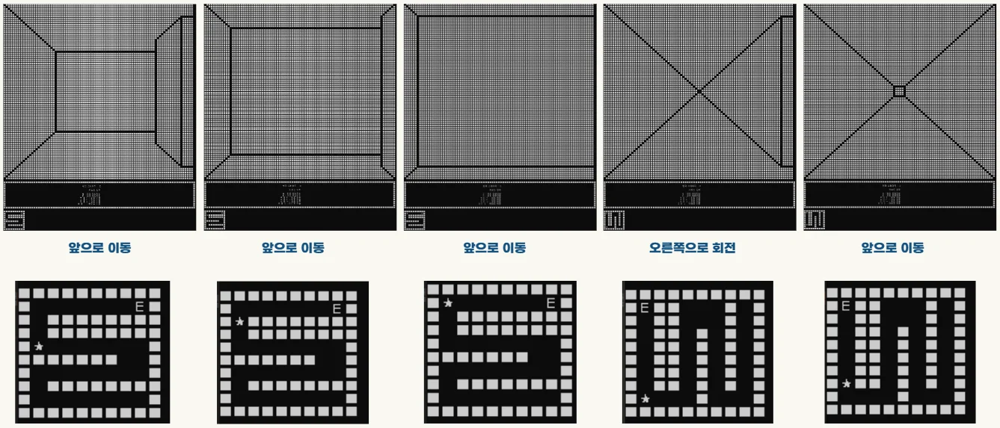
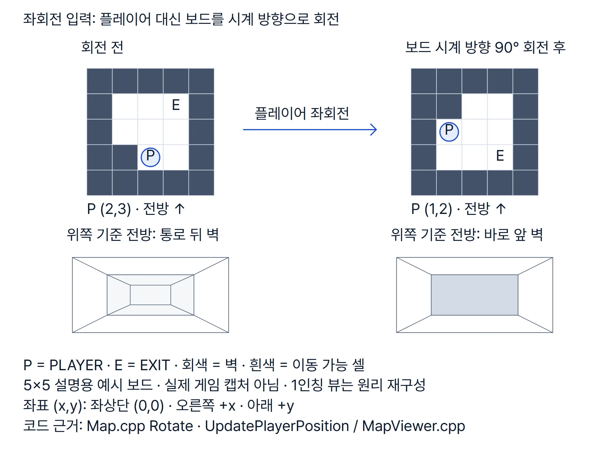
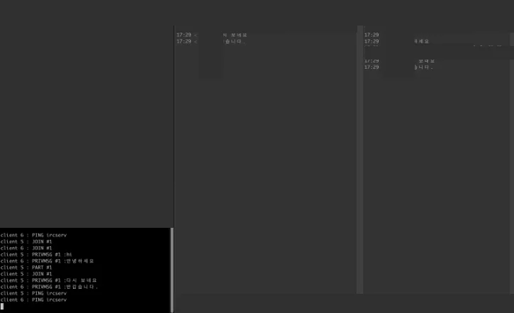
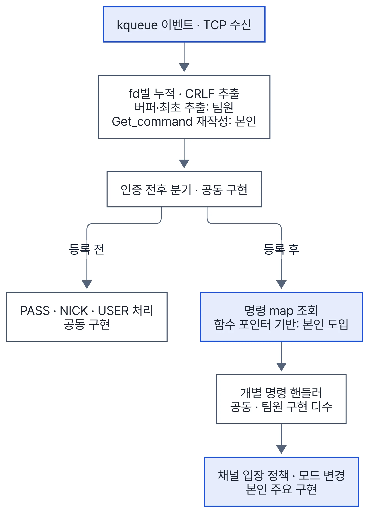

부록 · C++ 기초 사례
MAZEGAME
2024.09.27~2024.10.03 · 1인(공개 커밋 전부 본인) · C++ · WinAPI 콘솔
렌더러는 배열 위쪽을 늘 전방으로 읽습니다. 방향별 렌더러 대신 회전 때 보드를 돌려 렌더러 하나로 네 방향을 그렸습니다.


| 한 일 | 근거 |
|---|---|
| 2D 격자를 1인칭 문자 화면으로 합성. 정면 벽 거리와 좌우 통로 길이로 윤곽·모서리를 겹쳐 그림 | MapViewer.cpp |
| 회전 입력 때 보드 배열을 돌리고 플레이어 좌표를 다시 찾는 처리 | Map.cpp L132–162 |
| 회전 입력에 이동까지 실행되던 버그를 회전·이동 배타 분기로 수정 | 7f57caa |
| 무작위로 만든 맵은 BFS로 출구 도달을 검사하고, 닿지 못하면 다시 생성 | Map.cpp L69–129 · 재시도 L10–14 |


IRC 채팅 서버


2023.06.06~2023.07.02 · 42서울 2인 팀 · C++98 · BSD Socket · kqueue · Docker
팀원 담당: 소켓·이벤트 등록 초기화, 수신 버퍼 누적·최초 CRLF 명령 추출, PRIVMSG·TOPIC 등 개별 명령 본체, 콜론 파라미터 파서 확장.
| 한 일(본인) | 근거 |
|---|---|
| kqueue 이벤트 루프 주요 경로, 팀원 수신 버퍼의 명령 추출 재작성 | df727a0 |
| 명령 문자열 → 함수 포인터 map 디스패치 기반, 채널 입장·권한·퇴장 | CommandHandler.cpp L22–115 · 9e4a3ab · 1889115 |
| 사용자·채널 소속 해제와 빈 채널 삭제를 연결한 종료 경로 | UserChannelController.cpp L21–45 · User.cpp L80–86 |
| InspIRCd·irssi·tcpflow를 Docker로 묶은 기준 서버 응답 관찰 환경 | ded9aa2 |
남은 한계: 연결 종료 때 여러 채널을 순회하며 지우는 경로에서 일부 소속을 건너뛸 수 있습니다.

